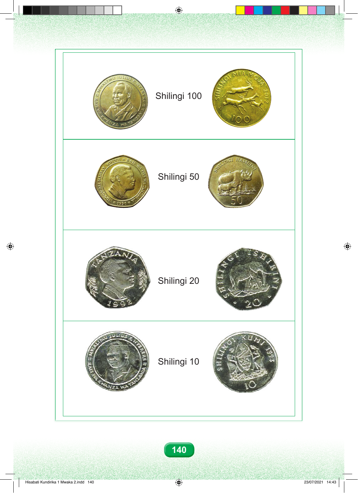

Maelezo ya sarafu yanaendelea. Mstari wa kwanza una pande mbili za sarafu ya shilingi mia moja: upande mmoja una picha ya kiongozi, na upande mwingine una wanyama pamoja na namba mia moja. Mstari wa pili una pande mbili za sarafu ya shilingi hamsini: upande mmoja una picha ya kiongozi, na upande mwingine una kifaru pamoja na namba hamsini. Mstari wa tatu una pande mbili za sarafu ya shilingi ishirini: upande mmoja una picha ya kiongozi, na upande mwingine una picha ya tembo pamoja na namba ishirini. Mstari wa nne una pande mbili za sarafu ya shilingi kumi: upande mmoja una picha ya kiongozi, na upande mwingine una alama pamoja na namba kumi. 140 Hisabati Kundirika 1 Mwaka 2.indd 140 23/07/2021 14:43